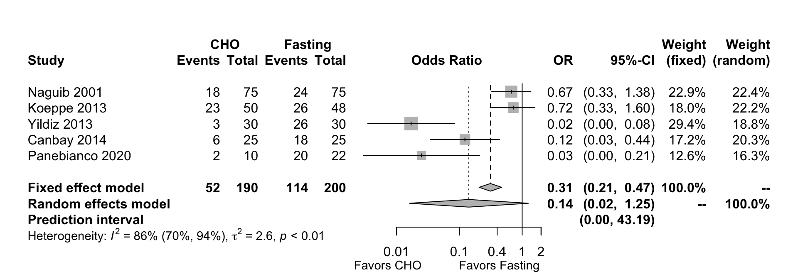
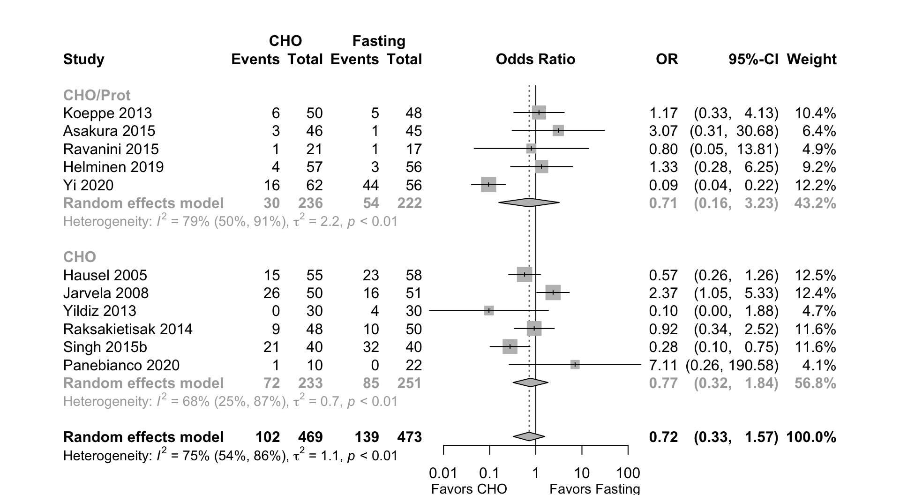
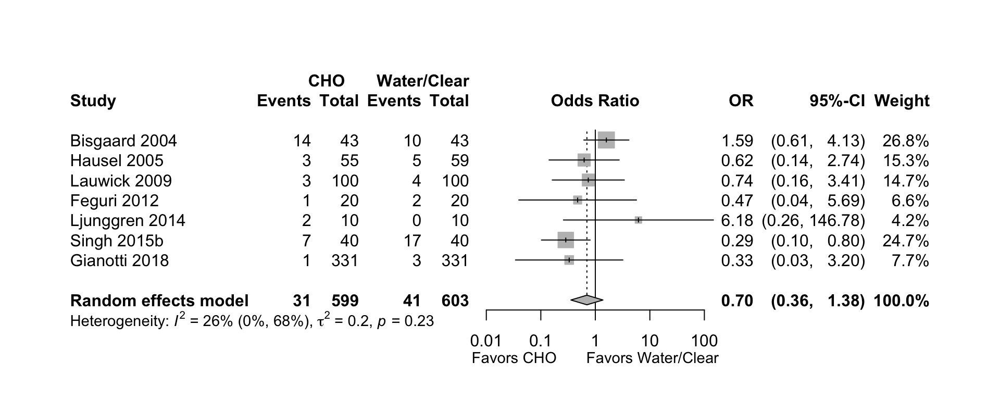

Table 1. Number of included studies according to age, surgery, and design.
| Age | Patients | Design | N |
|---|---|---|---|
| Adult | Surgical | RCT | 80 |
| Nonrandomized | 7 | ||
| Prospective Cohort | 2 | ||
| Retrospective Cohort | 1 | ||
| Case-control | 1 | ||
| Before-after | 1 | ||
| Adult | Non-surgical | RCT | 2 |
| Crossover | 9 | ||
| Nonrandomized | 2 | ||
| Pediatric | Surgical | RCT | 5 |
| Nonrandomized | 1 | ||
| Prospective Cohort | 1 | ||
| Pediatric | Non-surgical | RCT | 1 |
| Crossover | 1 | ||
| Prospective Cohort | 1 |
Table 2. List of included studies according to age, surgery, and design (see References for citations).
| ID | Study | Analyzed (N) | Centers | Countrya |
|---|---|---|---|---|
| Adult, Surgical | ||||
| RCT | ||||
| 5725 | Hausel 2001 | 252 | 3 | Sweden |
| 5803 | Naguib 2001 | 375 | 1 | Saudi Arabiaa |
| 5802 | Soop 2001 | 15 | 1 | Sweden |
| 5479 | Henriksen 2003 | 48 | 1 | Denmark |
| 5309 | Bisgaard 2004 | 86 | 1 | Denmark |
| 5229 | Soop 2004 | 14 | 1 | Sweden |
| 5091 | Hausel 2005 | 172 | 3 | Sweden |
| 5118 | Yuill 2005 | 65 | 1 | UK |
| 4766 | Breuer 2006 | 160 | 1 | Germany |
| 4952 | Melis 2006 | 29 | 1 | Netherlands |
| 4810 | Noblett 2006 | 35 | 1 | UK |
| 4702 | Rapp-Kesek 2007 | 18 | 1 | Sweden |
| 4602 | Svanfeldt 2007 | 12 | 1 | Sweden |
| 4443 | Jarvela 2008 | 101 | 1 | Finland |
| 4524 | Yagci 2008 | 70 | 1 | Turkeya |
| 4261 | Aronsson 2009 | 28 | 1 | Sweden |
| 4245 | Faria 2009 | 21 | 1 | Brazila |
| 4305 | Helminen 2009 | 230 | 1 | Finland |
| 4318 | Lauwick 2009 | 200 | 1 | Belgium |
| 4084 | Kaska 2010 | 221 | 1 | Czech Republica |
| 3987 | Mathur 2010 | 142 | 2 | New Zealand |
| 4083 | Protic 2010 | 110 | 1 | Croatiaa |
| 4014 | Wang 2010 | 52 | 1 | Chinaa |
| 3823 | DNascimento 2011 | 50 | 1 | Brazila |
| 3670 | Perrone 2011 | 17 | 1 | Brazila |
| 3553 | Yagmurdur 2011 | 44 | 1 | Turkeya |
| 3282 | DNascimento 2012a | 28 | 1 | Brazila |
| 3513 | DNascimento 2012b | 48 | 1 | Brazila |
| 3518 | Feguri 2012 | 40 | 1 | Brazila |
| 3403 | Harsten 2012 | 60 | 1 | Sweden |
| 3371 | Ljunggren 2012 | 57 | 1 | Sweden |
| 3277 | Nakai 2012 | 104 | 1 | Japan |
| 6490 | Yang 2012 | 48 | 1 | Chinaa |
| 2940 | Koeppe 2013 | 98 | 1 | Brazila |
| 3107 | Lidder 2013 | 120 | 1 | UK |
| 3090 | Pexe-Machado 2013 | 22 | 1 | Brazila |
| 3036 | Tran 2013 | 38 | 1 | Canada |
| 3154 | Yildiz 2013 | 60 | 1 | Turkeya |
| 2985 | Yilmaz 2013 | 40 | 1 | Turkeya |
| 2982 | Zelic 2013 | 70 | 1 | Croatia |
| 2674 | Canbay 2014 | 50 | 1 | Turkeya |
| 2806 | deANascimento 2014 | 24 | 1 | Brazila |
| 2710 | Ljunggren 2014 | 20 | 2 | Sweden |
| 2734 | Raksakietisak 2014 | 98 | 1 | Thailanda |
| 2564 | Sada 2014 | 142 | 1 | Kosovoa |
| 2820 | Webster 2014 | 44 | 1 | Australia |
| 2234 | Asakura 2015 | 134 | 1 | Japan |
| 2261 | Pedziwiatr 2015 | 40 | 1 | Polanda |
| 2256 | Ravanini 2015 | 38 | 1 | Brazila |
| 2482 | Singh 2015a | 20 | 1 | Indiaa |
| 2172 | Singh 2015b | 120 | 1 | Indiaa |
| 1768 | Ajuzieogu 2016 | 88 | 1 | Nigeriaa |
| 1926 | Celiksular 2016 | 80 | 1 | Turkeya |
| 1993 | Karlsson 2016 | 73 | 1 | Sweden |
| 1795 | Tsutsumi 2016 | 24 | 1 | Japan |
| 1290 | Cakar 2017 | 60 | 1 | Turkeya |
| 1631 | Dilmen 2017 | 40 | 1 | Turkeya |
| 1320 | Lee 2017 | 57 | 1 | South Korea |
| 1274 | Savluk 2017 | 152 | 1 | Turkeya |
| 915 | Doo 2018 | 50 | 1 | South Korea |
| 1230 | Esaki 2018 | 23 | 1 | Japan |
| 1117 | Gianotti 2018 | 662 | 5 | Italya |
| 926 | Lee 2018 | 139 | 1 | South Korea |
| 1102 | van Stijn 2018 | 18 | 1 | Netherlands |
| 673 | Feguri 2019 | 28 | 1 | Brazila |
| 466 | Helminen 2019 | 108 | 1 | Finland |
| 391 | Liu 2019 | 120 | 1 | Chinaa |
| 553 | Onalan 2019 | 50 | 1 | Turkeya |
| 431 | Rizvanovic 2019 | 50 | 1 | Bosnia and Herzegovinaa |
| 716 | Tewari 2019 | 32 | 1 | UK |
| 602 | Wang 2019 | 73 | 1 | Chinaa |
| 763 | Wongyingsinn 2019 | 68 | 1 | Thailanda |
| 743 | Zhang 2019 | 58 | 1 | Chinaa |
| 165 | Marquini 2020ab | 74 | 1 | Brazila |
| 6446 | Marquini 2020bb | 74 | 1 | Brazila |
| 247 | Marquini 2020cb | 74 | 1 | Brazila |
| 274 | Panebianco 2020 | 32 | 1 | Italya |
| 160 | Shi 2020 | 63 | 1 | Chinaa |
| 262 | Wendling 2020 | 47 | 1 | USA |
| 245 | Yi 2020 | 118 | 1 | Malaysiaa |
| Nonrandomized Studies of Interventions | ||||
| 3588 | Oyama 2011 | 121 | 1 | Japan |
| 3367 | Vigano 2012 | 76 | 1 | Italya |
| 7283 | Riley 2015 | 60 | 1 | USA |
| 1782 | De Jonghe 2016 | 393 | 1 | Francea |
| 6529 | Adamova 2017 | 172 | 1 | Czech Republica |
| 1618 | Hellstrom 2017 | 29 | 1 | Sweden |
| 1463 | Labuschagne 2017 | 391 | 1 | Australia |
| Prospective Cohort | ||||
| 3812 | Taniguchi 2011 | 20 | 1 | Japan |
| 131 | Alimena 2020 | 415 | 1 | USA |
| Retrospective Cohort | ||||
| 6142 | Blum 2019 | 100 | 1 | USA |
| Case-control | ||||
| 6530 | Weledji 2017 | 70 | 1 | Cameroona |
| Before-after | ||||
| 318 | Pachella 2019 | 97 | 1 | USA |
| Adult, Non-surgical | ||||
| RCT | ||||
| 499 | Nascimento 2019 | 54 | 1 | Brazila |
| 233 | Pai 2020 | 19 | 1 | USA |
| Crossover | ||||
| 4092 | Lobo 2009 | 20 | 1 | UK |
| 3728 | Awad 2011 | 10 | 1 | UK |
| 2759 | Brianez 2014 | 11 | 1 | Brazila |
| 2703 | Nakamura 2014 | 10 | 1 | Japan |
| 7600 | Bisinotto 2017 | 80 | 1 | Brazila |
| 1677 | Gomes 2017 | 20 | 1 | Brazila |
| 6494 | Jian 2017 | 30 | 1 | Chinaa |
| 1352 | Okabe 2017 | 8 | 1 | Japan |
| 6280 | Bisinotto 2019 | 34 | 1 | Brazila |
| Nonrandomized Studies of Interventions | ||||
| 4422 | Gustafsson 2008 | 35 | 1 | Sweden |
| 1551 | Shiraishi 2017 | 20 | 1 | Japan |
| Pediatric, Surgical | ||||
| RCT | ||||
| 2756 | Gawecka 2014 | 20 | 1 | Polanda |
| 2814 | Jabbari Moghaddam 2014 | 120 | 1 | Irana |
| 1228 | Jiang 2018 | 1200 | 6 | Chinaa |
| 940 | Tudor-Drobjewski 2018 | 120 | 1 | Austria |
| 7880 | Carvalho 2020 | 40 | 1 | Brazila |
| Nonrandomized Studies of Interventions | ||||
| 5815 | Moyao-Garcia 2001 | 40 | 1 | Mexicoa |
| Prospective Cohort | ||||
| 1972 | Song 2016 | 79 | 1 | South Korea |
| Pediatric, Non-surgical | ||||
| RCT | ||||
| 1315 | Du 2017 | 48 | 1 | USA |
| Crossover | ||||
| 81 | Zhang 2020 | 16 | 1 | Chinaa |
| Prospective Cohort | ||||
| 3598 | Schmitz 2011b | 16 | 1 | Switzerland |
| Multiple publications of the same study. | ||||
| a Non very high Human Development Index country. | ||||
Table 3. Comparative hunger ratings according to fasting, liquid and volume.
| Study | N | Liquid | > 6 | 6 → 2 | ≤ 2 | (hr) | N (%) | CHO vs. Fasting | |
|---|---|---|---|---|---|---|---|---|---|
| Adult, Surgical | |||||||||
| RCT | |||||||||
| Koeppe 2013b | 48 | Fasting | 0 | 32 (67) | 0.39 (0.17, 0.89) | ||||
| 50 | CHO/Prot | 200 | 22 (44) | ||||||
| Panebianco 2020c | 22 | Fasting | 0 | 20 (91) | 0.04 (0.01, 0.31) | ||||
| 10 | CHO | 800 | 400 | 3 (30) | |||||
| Retrospective Cohort | |||||||||
| Taniguchi 2011d | 20 | CHO | 1000 | 0 | 3 (15) | ||||
| Pedatric, Surgical | |||||||||
| RCT | |||||||||
| Tudor-Drobjewski 2018e | 60 | Fasting | 0 | 18 (30) | 1.17 (0.54, 2.52) | ||||
| 60 | CHO | 215 | 20 (33) | ||||||
| RCT: randomized controlled trial; OR: odds ratio; CHO: carbohydrate; Prot: protein. | |||||||||
| a When outcome assessed relative to surgery where 0 is prior to induction. | |||||||||
| b ‘Did you feel hunger during the fasting period?’ | |||||||||
| c Reported no hunger. | |||||||||
| d Oral rehydration consumed between 5 and 2 hours prior to surgery. ‘Did you feel hungry before surgery?’ | |||||||||
| e Hunger present or absent. | |||||||||
Table 4. Comparative thirst ratings according to fasting, liquid and volume.
| Study | N | Liquid | > 6 | 6 → 2 | ≤ 2 | (hr) | N (%) | CHO vs. Comparator | |
|---|---|---|---|---|---|---|---|---|---|
| Adult, Surgical | |||||||||
| RCT | |||||||||
| Feguri 2012b | 20 | Water | 400 | 200 | 4 | 3 (15) | 0.12 (0.01, 2.53) | ||
| 20 | CHO | 400 | 200 | 0 (0) | |||||
| Koeppe 2013c | 48 | Fasting | 0 | 26 (54) | 0.72 (0.33, 1.60) | ||||
| 50 | CHO/Prot | 200 | 23 (46) | ||||||
| Yildiz 2013d | 30 | Fasting | 0 | 26 (87) | 0.02 (0.00, 0.08) | ||||
| 30 | CHO | 800 | 400 | 3 (10) | |||||
| Panebianco 2020e | 22 | Fasting | 0 | 20 (91) | 0.03 (0.00, 0.21) | ||||
| 10 | CHO | 800 | 400 | 2 (20) | |||||
| Nonrandomized Studies of Interventions | |||||||||
| Labuschagne 2017f | 194 | Fasting | 0 | 125 (65) | 0.28 (0.19, 0.43) | ||||
| 197 | CHO | 1200 | 67 (34) | ||||||
| Retrospective Cohort | |||||||||
| Taniguchi 2011g | 20 | CHO | 1000 | 0 | 3 (15) | ||||
| Pedatric, Surgical | |||||||||
| RCT | |||||||||
| Tudor-Drobjewski 2018h | 60 | Fasting | 0 | 19 (32) | 0.92 (0.43, 2.01) | ||||
| 60 | CHO | 215 | 18 (30) | ||||||
| RCT: randomized controlled trial; OR: odds ratio; CHO: carbohydrate; Prot: protein. | |||||||||
| a When outcome assessed relative to surgery where 0 is prior to induction. | |||||||||
| b Reported thirst. | |||||||||
| c ‘Did you feel thirst during the fasting period?’ (prior to endoscopy) | |||||||||
| d Based on VAS scores’ | |||||||||
| e ‘None vs. a little or alot.’ | |||||||||
| f Yes vs. no. | |||||||||
| g ‘Did you have a dry mouth before surgery?’ | |||||||||
| h Thirst present or absent. | |||||||||
Figure 1. Pooled incidence of thirst — randomized trials comparing carbohydrate drinks with fasting in adult surgical patients.

| Version | Author | Date |
|---|---|---|
| e948281 | Mark Grant | 2021-01-13 |
Table 5. Comparative nausea ratings according to fasting, liquid and volume.
| Study | N | Liquid | > 6 | 6 → 2 | ≤ 2 | (hr) | N (%) | CHO vs. Comparator | |
|---|---|---|---|---|---|---|---|---|---|
| Adult, Surgical | |||||||||
| RCT | |||||||||
| Bisgaard 2004 | 43 | Placebo | 800 | 400 | 0-24 | 23 (53) | 1.10 (0.47, 2.57) | ||
| 43 | CHO | 800 | 400 | 24 (56) | |||||
| Hausel 2005 | 58 | Fasting | 0-24 | 23 (46) | 0.57 (0.26, 1.26) | ||||
| 59 | Placebo | 800 | 400 | 23 (39) | 0.59 (0.27, 1.29) | ||||
| 55 | CHO | 800 | 400 | 15 (27) | |||||
| Jarvela 2008 | 51 | Fasting | 0 | 16 (31) | 2.37 (1.05, 5.33) | ||||
| 50 | CHO | 400 | 26 (52) | ||||||
| Lauwick 2009 | 100 | Water | 100 | 24 | 32 (32) | 1.00 (0.55, 1.81) | |||
| 100 | CHO | 400 | 32 (32) | ||||||
| Perrone 2011 | 9 | Water | 474 | 237 | 0 | 0 (0) | |||
| 8 | CHO/Prot | 474 | 237 | 0 (0) | |||||
| Feguri 2012 | 20 | Water | 400 | 200 | 4 | 5 (25) | 0.53 (0.11, 2.60) | ||
| 20 | CHO | 400 | 200 | 3 (15) | |||||
| Koeppe 2013 | 48 | Fasting | 0 | 5 (10) | 1.17 (0.33, 4.13) | ||||
| 50 | CHO/Prot | 200 | 6 (12) | ||||||
| Yildiz 2013 | 30 | Fasting | 0 | 4 (13) | 0.10 (0.00, 1.88) | ||||
| 30 | CHO | 800 | 400 | 0 (0) | |||||
| Raksakietisak 2014 | 50 | Fasting | 10 (20) | 0.92 (0.34, 2.52) | |||||
| 48 | CHO | 400 | 400 | 9 (19) | |||||
| Asakura 2015 | 45 | Fasting | 0 | 1 (2) | 3.30 (0.33, 33.02) | ||||
| 46 | CHO/Prot | 250 | 3 (6) | 1.07 (0.20, 5.64) | |||||
| 43 | CHO | 1000 | 3 (7) | ||||||
| Pedziwiatr 2015 | 20 | Water | 400 | 24 | 2 (10) | 0.47 (0.04, 5.69) | |||
| 20 | CHO | 400 | 1 (5) | ||||||
| Ravanini 2015 | 17 | Fasting | 4 | 1 (6) | 0.80 (0.05, 13.81) | ||||
| 21 | CHO/Prot | 200 | 1 (5) | ||||||
| Singh 2015b | 40 | Fasting | 4 | 32 (80) | 0.28 (0.10, 0.75) | ||||
| 40 | Water | 400 | 200 | 35 (88) | 0.16 (0.05, 0.49) | ||||
| 40 | CHO | 400 | 200 | 21 (52) | |||||
| Gianotti 2018 | 331 | Water | 800 | 5 (2) | 3.53 (1.29, 9.68) | ||||
| 331 | CHO | 800 | 17 (5) | ||||||
| Helminen 2019 | 56 | Fasting | 2 | 3 (5) | 1.33 (0.28, 6.25) | ||||
| 57 | CHO/Prot | 200 | 4 (7) | ||||||
| Rizvanovic 2019 | 25 | Fasting | 0 | 0 (0) | |||||
| 25 | CHO | 400 | 200 | 0 (0) | |||||
| Marquini 2020b | 40 | Clear | 200 | 10 | 7 (18) | 1.22 (0.38, 3.92) | |||
| 34 | CHO/Prot | 200 | 7 (20) | ||||||
| Panebianco 2020 | 22 | Fasting | 0 | 0 (0) | 7.11 (0.26, 190.58) | ||||
| 10 | CHO | 800 | 400 | 1 (10) | |||||
| Yi 2020 | 56 | Fasting | > 0 | 44 (78) | 0.09 (0.04, 0.22) | ||||
| 62 | CHO/Prot | 474 | 237 | 16 (26) | |||||
| Retrospective Cohort | |||||||||
| Blum 2019 | 50 | Fasting | 48 | 6 (12) | 0.31 (0.06, 1.59) | ||||
| 50 | CHO/Prot | 474 | 296 | 2 (4) | |||||
| Before-After | |||||||||
| Pachella 2019 | 47 | Clear | 24 | 15 (32) | 0.41 (0.15, 1.08) | ||||
| 50 | CHO | 296 | 8 (16) | ||||||
| Pedatric, Surgical | |||||||||
| RCT | |||||||||
| Jabbari Moghaddam 2014 | 60 | Fasting | 1 | 17 (28) | 0.18 (0.06, 0.58) | ||||
| 60 | CHO | 4 (7) | |||||||
| Tudor-Drobjewski 2018 | 60 | Fasting | 0 | 15 (25) | 0.33 (0.12, 0.93) | ||||
| 60 | CHO | 215 | 6 (10) | ||||||
| Song 2016 | 79 | CHO | 176 | 8 | 1 (1) | ||||
| RCT: randomized controlled trial; OR: odds ratio; CHO: carbohydrate; Prot: protein. | |||||||||
| a When outcome assessed relative to surgery where 0 is prior to induction. | |||||||||
Figure 2. Pooled incidence of nausea — randomized trials comparing carbohydrate drinks with fasting in adult surgical patients.

| Version | Author | Date |
|---|---|---|
| 5c4d0a9 | Mark Grant | 2021-01-13 |
Figure 3. Pooled incidence of nausea — randomized trials comparing carbohydrate drinks with water or placebo in adult surgical patients.
| Version | Author | Date |
|---|---|---|
| 5c4d0a9 | Mark Grant | 2021-01-13 |
Table 6. Comparative vomiting ratings according to fasting, liquid and volume.
| Study | N | Liquid | > 6 | 6 → 2 | ≤ 2 | (hr) | N (%) | CHO vs. Comparator | |
|---|---|---|---|---|---|---|---|---|---|
| Adult, Surgical | |||||||||
| RCT | |||||||||
| Bisgaard 2004 | 43 | Placebo | 800 | 400 | 0-24 | 10 (23) | 1.59 (0.61, 4.13) | ||
| 43 | CHO | 800 | 400 | 14 (33) | |||||
| Hausel 2005 | 58 | Fasting | 0-24 | 4 (7) | 0.78 (0.17, 3.65) | ||||
| 59 | Placebo | 800 | 400 | 5 (8) | 0.62 (0.14, 2.74) | ||||
| 55 | CHO | 800 | 400 | 3 (5) | |||||
| Jarvela 2008 | 51 | Fasting | 0 | 7 (14) | 1.57 (0.55, 4.52) | ||||
| 50 | CHO | 400 | 10 (20) | ||||||
| Lauwick 2009 | 100 | Water | 100 | 24 | 4 (4) | 0.74 (0.16, 3.41) | |||
| 100 | CHO | 400 | 3 (3) | ||||||
| Perrone 2011 | 9 | Water | 474 | 237 | 0 | 0 (0) | |||
| 8 | CHO/Prot | 474 | 237 | 0 (0) | |||||
| Feguri 2012 | 20 | Water | 400 | 200 | 4 | 2 (10) | 0.47 (0.04, 5.69) | ||
| 20 | CHO | 400 | 200 | 1 (5) | |||||
| Nakai 2012 | 52 | Fasting | 0 (0) | ||||||
| 52 | CHO | 1250 | 0 (0) | ||||||
| Pexe-Machado 2013 | 12 | Fasting | 0 | 0 (0) | |||||
| 10 | CHO/Prot | 400 | 200 | 0 (0) | |||||
| Raksakietisak 2014 | 50 | Fasting | 8 (16) | 1.05 (0.36, 3.07) | |||||
| 48 | CHO | 400 | 400 | 8 (17) | |||||
| Ravanini 2015 | 17 | Fasting | 4 | 0 (0) | 2.56 (0.10, 66.95) | ||||
| 21 | CHO/Prot | 200 | 1 (5) | ||||||
| Singh 2015b | 40 | Fasting | 4 | 19 (48) | 0.23 (0.08, 0.65) | ||||
| 40 | Water | 400 | 200 | 17 (42) | 0.29 (0.10, 0.80) | ||||
| 40 | CHO | 400 | 200 | 7 (18) | |||||
| Gianotti 2018 | 331 | Water | 800 | 3 (1) | 0.33 (0.03, 3.20) | ||||
| 331 | CHO | 800 | 1 (0) | ||||||
| Helminen 2019 | 56 | Fasting | 2 | 4 (7) | 0.72 (0.15, 3.38) | ||||
| 57 | CHO/Prot | 200 | 3 (5) | ||||||
| Rizvanovic 2019 | 25 | Fasting | 0 | 0 (0) | |||||
| 25 | CHO | 400 | 200 | 0 (0) | |||||
| Zhang 2019 | 29 | Fasting | 24 | 12 (43) | 0.54 (0.18, 1.62) | ||||
| 29 | CHO | 800 | 400 | 8 (29) | |||||
| Marquini 2020b | 40 | Clear | 200 | 10 | 4 (10) | 1.20 (0.28, 5.21) | |||
| 34 | CHO/Prot | 200 | 4 (12) | ||||||
| Panebianco 2020 | 22 | Fasting | 0 | 0 (0) | |||||
| 10 | CHO | 800 | 400 | 0 (0) | |||||
| Yi 2020 | 56 | Fasting | > 0 | 34 (61) | 0.14 (0.06, 0.32) | ||||
| 62 | CHO/Prot | 474 | 237 | 11 (18) | |||||
| Prospective Cohort | |||||||||
| Taniguchi 2011 | 20 | CHO | 1000 | 0 | 0 (0) | ||||
| Retrospective Cohort | |||||||||
| Blum 2019 | 50 | Fasting | 48 | 3 (6) | 0.32 (0.03, 3.18) | ||||
| 50 | CHO/Prot | 474 | 296 | 1 (2) | |||||
| Case-Control | |||||||||
| Weledji 2017 | 35 | Fasting | 1 (3) | 2.06 (0.18, 23.83) | |||||
| 35 | CHO | 600 | 600 | 2 (6) | |||||
| Pedatric, Surgical | |||||||||
| RCT | |||||||||
| Gawecka 2014 | 10 | Fasting | 0 (0) | ||||||
| 10 | CHO | 0 (0) | |||||||
| Jabbari Moghaddam 2014 | 60 | Fasting | 1 | 4 (7) | 0.74 (0.16, 3.44) | ||||
| 60 | CHO | 3 (5) | |||||||
| Jiang 2018 | 300 | Fasting | 0 (0) | ||||||
| 300 | CHO | 0 (0) | |||||||
| 300 | CHO | 0 (0) | |||||||
| Tudor-Drobjewski 2018 | 60 | Fasting | 0 | 3 (5) | 0.32 (0.03, 3.19) | ||||
| 60 | CHO | 215 | 1 (2) | ||||||
| Prospective Cohort | |||||||||
| Song 2016 | 79 | CHO | 176 | 8 | 2 (2) | ||||
| RCT: randomized controlled trial; OR: odds ratio; CHO: carbohydrate; Prot: protein. | |||||||||
| a When outcome assessed relative to surgery where 0 is prior to induction. | |||||||||
Figure 4. Pooled incidence of vomiting — randomized trials comparing carbohydrate drinks with fasting in adult surgical patients.
Figure 5. Pooled incidence of vomiting — randomized trials comparing carbohydrate drinks with water or placebo in adult surgical patients.

Table 7. Characteristics of 29 included studies examining carbohydrate drinks.
| Study | Dates | Country | (N) | Pilot | Setting | Gen | Reg | Sed | Type of Surgery | Registered |
|---|---|---|---|---|---|---|---|---|---|---|
| Adult, Surgical | ||||||||||
| RCT | ||||||||||
| Hausel 2001 | SWE | 252 | Hosp | • | • | Colorectal | ||||
| Naguib 2001 | SAU | 375 | Hosp | • | Various | |||||
| Soop 2001 | SWE | 19 | Hosp | • | TKA/THA | |||||
| Henriksen 2003 | DNK | 58 | Hosp | • | Colorectal | |||||
| Bisgaard 2004 | 10/99-03/01 | DNK | 94 | Hosp | • | Cholecystectomy | ||||
| Soop 2004 | SWE | 15 | Hosp | • | • | TKA/THA | ||||
| Hausel 2005 | SWE | 174 | Hosp | • | Cholecystectomy | |||||
| Yuill 2005 | 08/99-03/01 | GBR | 72 | Hosp | • | Other GI | ||||
| Breuer 2006 | DEU | 188 | • | Hosp | • | CABG | ||||
| Melis 2006 | NLD | 30 | Hosp | • | • | Orthopedic | ||||
| Noblett 2006 | GBR | 37 | Hosp | • | Colorectal | |||||
| Rapp-Kesek 2007 | SWE | 18 | Hosp | • | CABG | |||||
| Svanfeldt 2007 | 11/01-02/05 | SWE | 15 | Hosp | • | Colorectal | ||||
| Jarvela 2008 | 11/04-06/05 | FIN | 101 | Hosp | • | CABG | ||||
| Yagci 2008 | 01/05-04/06 | TUR | 70 | Hosp | • | Thyroid | ||||
| Aronsson 2009 | SWE | 29 | Hosp | • | • | TKA/THA | ||||
| Faria 2009 | BRA | 25 | Hosp | • | Cholecystectomy | |||||
| Helminen 2009 | FIN | 240 | Hosp | • | Thyroid | |||||
| Lauwick 2009 | 01/04-07/06 | BEL | 208 | Hosp | • | Thyroid | ||||
| Kaska 2010 | CZE | 221 | Hosp | • | Colorectal | |||||
| Mathur 2010 | 07/04-12/05 | NZL | 162 | Hosp | • | • | Colorectal | |||
| Protic 2010 | HRV | 120 | Hosp | • | TKA/THA | |||||
| Wang 2010 | CHN | 149 | Hosp | • | Colorectal | |||||
| DNascimento 2011 | BRA | 53 | Hosp | • | Cholecystectomy | |||||
| Perrone 2011 | BRA | 26 | Hosp | • | • | Herniorrhaphy | • | |||
| Yagmurdur 2011 | TUR | 44 | Hosp | • | Herniorrhaphy | • | ||||
| DNascimento 2012a | 10/08-10/10 | BRA | 36 | Hosp | • | Cholecystectomy | ||||
| DNascimento 2012b | BRA | 55 | Hosp | • | Cholecystectomy | |||||
| Feguri 2012 | 05/10-06/11 | BRA | 40 | Hosp | • | CABG | ||||
| Harsten 2012 | 09/09-03/10 | SWE | 60 | Hosp | • | Orthopedic | ||||
| Ljunggren 2012 | 05/08-09/09 | SWE | 60 | Hosp | • | TKA/THA | ||||
| Nakai 2012 | JPN | 104 | Hosp | • | Various | |||||
| Yang 2012 | CHN | 60 | Hosp | • | Other GI | |||||
| Koeppe 2013 | 03/11-11/11 | BRA | 98 | Hosp | • | Endoscopic | ||||
| Lidder 2013 | GBR | 293 | Hosp | • | Colorectal | |||||
| Pexe-Machado 2013 | 03/10-12/11 | BRA | 30 | Hosp | • | • | Other GI | • | ||
| Tran 2013 | 02/08-08/09 | CAN | 38 | Hosp | • | CABG | • | |||
| Yildiz 2013 | TUR | 60 | Hosp | • | Cholecystectomy | |||||
| Yilmaz 2013 | 12/08-03/09 | TUR | 40 | Hosp | • | Cholecystectomy | ||||
| Zelic 2013 | HRV | 70 | Hosp | • | Cholecystectomy | |||||
| Canbay 2014 | TUR | 50 | Hosp | • | prostatectomy | |||||
| deANascimento 2014 | BRA | 35 | Amb | • | Other GI | • | ||||
| Ljunggren 2014 | 12/11-11/12 | SWE | 23 | Hosp | • | TKA/THA | • | |||
| Raksakietisak 2014 | 02/11-06/12 | THA | 100 | Hosp | • | TKA/THA | • | |||
| Sada 2014 | 01/10-01/12 | 162 | Hosp | • | Colorectal | • | ||||
| Webster 2014 | 08/11-04/12 | AUS | 46 | Hosp | • | Colorectal | ||||
| Asakura 2015 | 01/12-03/13 | JPN | 150 | Hosp | • | Various | • | |||
| Pedziwiatr 2015 | 11/13-02/14 | POL | 46 | Hosp | • | Cholecystectomy | ||||
| Ravanini 2015 | BRA | 38 | Hosp | • | Cholecystectomy | |||||
| Singh 2015a | IND | 20 | Hosp | • | Maxillofacial | |||||
| Singh 2015b | 07/12-12/13 | IND | 120 | Hosp | • | Cholecystectomy | ||||
| Ajuzieogu 2016 | 01/14-10/14 | NGA | 90 | Hosp | • | Other GI | ||||
| Celiksular 2016 | TUR | 80 | Hosp | • | • | TKA/THA | ||||
| Karlsson 2016 | SWE | 90 | Hosp | • | Other GI | |||||
| Tsutsumi 2016 | JPN | 25 | Hosp | • | Various | • | ||||
| Cakar 2017 | 03/11-09/11 | TUR | 63 | Hosp | • | Thyroid | ||||
| Dilmen 2017 | TUR | 43 | Hosp | • | Orthopedic | |||||
| Lee 2017 | 01/15-07/16 | KOR | 60 | Hosp | • | CABG | • | |||
| Savluk 2017 | TUR | 152 | Hosp | • | CABG | |||||
| Doo 2018 | KOR | 50 | Hosp | • | Thyroid | |||||
| Esaki 2018 | 05/13-01/14 | JPN | 24 | Hosp | • | Maxillofacial | ||||
| Gianotti 2018 | 01/11-12/15 | ITA | 880 | Hosp | • | Other GI | • | |||
| Lee 2018 | 09/15-12/16 | KOR | 153 | Hosp | • | Cholecystectomy | • | |||
| van Stijn 2018 | 12/08-11/09 | NLD | 20 | • | Hosp | • | Other GI | • | ||
| Feguri 2019 | 03/14-06/16 | BRA | 30 | Hosp | • | CABG | • | |||
| Helminen 2019 | 04/13-05/16 | FIN | 113 | Hosp | • | Cholecystectomy | • | |||
| Liu 2019 | 10/16-07/17 | CHN | 120 | Hosp | • | Neurosurgical | ||||
| Onalan 2019 | 02/16-07/16 | TUR | 53 | Hosp | • | Cholecystectomy | • | |||
| Rizvanovic 2019 | 05/18-12/18 | BIH | 50 | Hosp | • | Colorectal | • | |||
| Tewari 2019 | GBR | 32 | Hosp | • | Other GI | • | ||||
| Wang 2019 | 07/17-12/17 | CHN | 100 | Hosp | • | Endoscopic | • | |||
| Wongyingsinn 2019 | 02/14-09/16 | THA | 70 | Hosp | • | Colorectal | • | |||
| Zhang 2019 | 08/14-09/15 | CHN | 58 | Hosp | • | Gyn | • | |||
| Marquini 2020aa | 01/16-06/16 | BRA | 80 | Hosp | • | Gyn | • | |||
| Marquini 2020ba | 01/16-06/16 | BRA | 80 | Hosp | • | Gyn | • | |||
| Marquini 2020ca | 01/16-06/16 | BRA | 80 | Hosp | • | Gyn | • | |||
| Panebianco 2020 | 09/18-12/18 | ITA | 20 | Hosp | • | Other GI | ||||
| Shi 2020 | 01/17-12/17 | CHN | 70 | Hosp | • | Colorectal | ||||
| Wendling 2020 | 05/16-06/18 | USA | 67 | Hosp | • | Cesarean/vaginal birth | • | |||
| Yi 2020 | 10/17-09/19 | MYS | 118 | Hosp | • | Gyn | • | |||
| Nonrandomized Studies of Interventions | ||||||||||
| Oyama 2011 | 05/09-08/09 | JPN | 122 | Hosp | • | Various | ||||
| Vigano 2012 | ITA | 76 | • | Hosp | • | Other GI | ||||
| Riley 2015 | USA | 60 | • | Hosp | • | Gyn | ||||
| De Jonghe 2016 | 11/13-02/14 | FRA | 393 | • | Hosp | • | Gyn | |||
| Adamova 2017 | 01/10-01/15 | CZE | 172 | Hosp | • | Colorectal | ||||
| Hellstrom 2017 | SWE | 30 | • | Hosp | • | TKA/THA | • | |||
| Labuschagne 2017 | 04/12-05/15 | AUS | 398 | Hosp | • | Endoscopic | • | |||
| Prospective Cohort | ||||||||||
| Taniguchi 2011 | JPN | 20 | • | Hosp | • | Breast | ||||
| Alimena 2020 | 03/17-03/19 | USA | 582 | Amb | • | Gyn | ||||
| Retrospective Cohort | ||||||||||
| Blum 2019 | 01/14-12/18 | USA | 100 | Hosp | • | TKA/THA | ||||
| Case-control | ||||||||||
| Weledji 2017 | 12/15-03/16 | CMR | 70 | • | Hosp | • | • | Various | • | |
| Before-after | ||||||||||
| Pachella 2019 | 04/18-10/18 | USA | 116 | Hosp | • | Thoracic | ||||
| Adult, Non-surgical | ||||||||||
| RCT | ||||||||||
| Nascimento 2019 | 09/17-02/18 | BRA | 65 | Hosp | Cesarean/vaginal birth | • | ||||
| Pai 2020 | USA | 20 | • | Other | None (healthy) | |||||
| Crossover | ||||||||||
| Lobo 2009 | GBR | 20 | Hosp | None (healthy) | ||||||
| Awad 2011 | 07/09-01/10 | GBR | 10 | • | Hosp | None (healthy) | • | |||
| Brianez 2014 | 03/12-06/12 | BRA | 11 | Amb | None (healthy) | |||||
| Nakamura 2014 | JPN | 10 | Hosp | None (healthy) | ||||||
| Bisinotto 2017 | BRA | 84 | Hosp | None (healthy) | ||||||
| Gomes 2017 | BRA | 20 | Other | None (healthy) | • | |||||
| Jian 2017 | CHN | 30 | Hosp | None (healthy) | ||||||
| Okabe 2017 | JPN | 8 | • | Hosp | Other GI | • | ||||
| Bisinotto 2019 | BRA | 34 | Other | None (healthy) | ||||||
| Nonrandomized Studies of Interventions | ||||||||||
| Gustafsson 2008 | SWE | 35 | Hosp | None (healthy) | ||||||
| Shiraishi 2017 | JPN | 20 | • | Hosp | Other GI | |||||
| Pediatric, Surgical | ||||||||||
| RCT | ||||||||||
| Gawecka 2014 | POL | 20 | • | Other GI | ||||||
| Jabbari Moghaddam 2014 | IRN | 120 | Hosp | • | Adenotonsillectomy | |||||
| Jiang 2018 | 03/14-01/17 | CHN | 1200 | Hosp | • | Various | • | |||
| Tudor-Drobjewski 2018 | 02/14-06/16 | AUT | 120 | Hosp | • | Other GI | • | |||
| Carvalho 2020 | BRA | 54 | Hosp | • | Herniorrhaphy | |||||
| Nonrandomized Studies of Interventions | ||||||||||
| Moyao-Garcia 2001 | MEX | 40 | Hosp | • | Elective | |||||
| Prospective Cohort | ||||||||||
| Song 2016 | KOR | 86 | Hosp | • | Orthopedic | • | ||||
| Pediatric, Non-surgical | ||||||||||
| RCT | ||||||||||
| Du 2017 | 07/16-08/16 | USA | 50 | • | Amb | None (healthy) | • | |||
| Crossover | ||||||||||
| Zhang 2020 | 01/19-03/19 | CHN | 18 | Hosp | None (healthy) | • | ||||
| Prospective Cohort | ||||||||||
| Schmitz 2011b | 05/10-02/11 | CHE | 16 | Amb | None (healthy) | • | ||||
| Gen: general; Reg: regional; Sed: sedation; Hosp: hospital; Amb: ambulatory; TKA: total knee arthroplasty; THA: total hip arthroplasty. | ||||||||||
| a Multiple publications from the same study. | ||||||||||
Table 8. Characteristics of patients in included studies.
| Study | Analyzed | I | II | I-II | III | (%) | Mean | Med | White | Black | Asian | Mean | Med | DM (%) |
|---|---|---|---|---|---|---|---|---|---|---|---|---|---|---|
| Adult, Surgical | ||||||||||||||
| RCT | ||||||||||||||
| Hausel 2001 | 252 | 100 | 67 | 24 | ||||||||||
| Naguib 2001 | 375 | 100 | 50 | 32 | ||||||||||
| Soop 2001 | 15 | 73 | 62 | 25 | ||||||||||
| Henriksen 2003 | 48 | 100 | 17 | 64 | 27 | |||||||||
| Bisgaard 2004 | 86 | 100 | 82 | 43 | 13 | |||||||||
| Soop 2004 | 14 | 100 | 36 | 62 | 26 | |||||||||
| Hausel 2005 | 172 | 100 | 73 | 48 | 24 | |||||||||
| Yuill 2005 | 65 | 40 | 52 | 25 | ||||||||||
| Breuer 2006 | 160 | 94 | 22 | 64 | 27 | 19 | ||||||||
| Melis 2006 | 29 | 48 | 54 | |||||||||||
| Noblett 2006 | 35 | 57 | ||||||||||||
| Rapp-Kesek 2007 | 18 | 72 | 26 | |||||||||||
| Svanfeldt 2007 | 12 | 58 | 61 | 25 | ||||||||||
| Jarvela 2008 | 101 | 17 | 65 | 27 | ||||||||||
| Yagci 2008 | 70 | 100 | 50 | 46 | 26 | |||||||||
| Aronsson 2009 | 28 | 65 | 67 | 27 | ||||||||||
| Faria 2009 | 21 | 43 | 57 | 100 | 47 | |||||||||
| Helminen 2009 | 143 | 75 | 25 | 66 | 58 | 27 | ||||||||
| Lauwick 2009 | 200 | 55 | 45 | 100 | 46 | |||||||||
| Kaska 2010 | 149 | 100 | ||||||||||||
| Mathur 2010 | 142 | 14 | 66 | 21 | 48 | 63 | 25 | |||||||
| Protic 2010 | 110 | 76 | 81 | |||||||||||
| Wang 2010 | 48 | 80 | 20 | 54 | 64 | 100 | 22 | |||||||
| DNascimento 2011 | 50 | 63 | 36 | 100 | 41 | 25 | ||||||||
| Perrone 2011 | 17 | 59 | 41 | 65 | 38 | 29 | ||||||||
| Yagmurdur 2011 | 44 | 43 | 57 | 41 | 44 | 24 | ||||||||
| DNascimento 2012a | 28 | 100 | ||||||||||||
| DNascimento 2012b | 48 | 69 | 31 | 100 | 40 | 25 | ||||||||
| Feguri 2012 | 40 | 35 | 59 | 60 | 27 | |||||||||
| Harsten 2012 | 60 | 52 | 70 | |||||||||||
| Ljunggren 2012 | 57 | 16 | 65 | 20 | 67 | |||||||||
| Nakai 2012 | 104 | 13 | 87 | 62 | 59 | 23 | ||||||||
| Yang 2012 | 48 | 35 | 50 | 15 | 35 | 63 | 100 | 12 | ||||||
| Koeppe 2013 | 98 | 50 | 50 | 60 | 48 | 25 | 9 | |||||||
| Lidder 2013 | 62 | 50 | 71 | 26 | ||||||||||
| Pexe-Machado 2013 | 22 | 27 | 59 | 14 | 64 | 48 | 25 | |||||||
| Tran 2013 | 38 | 63 | 59 | 28 | ||||||||||
| Yildiz 2013 | 60 | 100 | 78 | 46 | ||||||||||
| Yilmaz 2013 | 40 | 72 | 28 | 44 | ||||||||||
| Zelic 2013 | 70 | 50 | 56 | 24 | ||||||||||
| Canbay 2014 | 50 | 100 | 59 | |||||||||||
| deANascimento 2014 | 24 | 88 | 12 | 79 | 38 | 26 | ||||||||
| Ljunggren 2014 | 20 | 19 | 62 | 19 | 68 | 67 | 27 | |||||||
| Raksakietisak 2014 | 98 | 5 | 86 | 9 | 90 | 70 | 51 | |||||||
| Sada 2014 | 142 | 63 | 56 | |||||||||||
| Webster 2014 | 44 | 82 | 59 | 58 | ||||||||||
| Asakura 2015 | 134 | 30 | 70 | 30 | 64 | 100 | 12 | |||||||
| Pedziwiatr 2015 | 40 | 22 | 68 | 10 | 62 | 54 | 29 | |||||||
| Ravanini 2015 | 38 | 55 | 45 | 100 | 45 | |||||||||
| Singh 2015a | 20 | 80 | 20 | 10 | 28 | 100 | 21 | |||||||
| Singh 2015b | 120 | 77 | 44 | 100 | ||||||||||
| Ajuzieogu 2016 | 88 | 88 | 12 | 100 | 26 | 100 | ||||||||
| Celiksular 2016 | 80 | 100 | 71 | 53 | ||||||||||
| Karlsson 2016 | 73 | 100 | 42 | 37 | ||||||||||
| Tsutsumi 2016 | 24 | 38 | 62 | 33 | 43 | 100 | 24 | |||||||
| Cakar 2017 | 60 | 90 | 10 | 53 | 49 | 26 | ||||||||
| Dilmen 2017 | 40 | 62 | 38 | 50 | 47 | 27 | ||||||||
| Lee 2017 | 57 | 14 | 65 | 100 | 25 | |||||||||
| Savluk 2017 | 152 | 18 | 58 | 28 | ||||||||||
| Doo 2018 | 50 | 76 | 24 | 78 | 50 | 100 | ||||||||
| Esaki 2018 | 23 | 100 | 56 | 43 | 100 | 23 | ||||||||
| Gianotti 2018 | 662 | 8 | 66 | 27 | 44 | 68 | 25 | |||||||
| Lee 2018 | 139 | 100 | 49 | 49 | 100 | 25 | ||||||||
| van Stijn 2018 | 18 | 28 | 61 | 26 | ||||||||||
| Feguri 2019 | 28 | 21 | 62 | 63 | 26 | 26 | 25 | |||||||
| Helminen 2019 | 113 | 64 | 36 | 81 | 47 | 29 | 9 | |||||||
| Liu 2019 | 120 | 18 | 82 | 67 | 100 | |||||||||
| Onalan 2019 | 50 | 100 | 74 | 54 | 29 | |||||||||
| Rizvanovic 2019 | 50 | 30 | 70 | 46 | 61 | 26 | ||||||||
| Tewari 2019 | 32 | 31 | 62 | 28 | ||||||||||
| Wang 2019 | 73 | 16 | 84 | 36 | 57 | 100 | ||||||||
| Wongyingsinn 2019 | 68 | 87 | 44 | 63 | 100 | 23 | ||||||||
| Zhang 2019 | 58 | 100 | 100 | 43 | 100 | |||||||||
| Marquini 2020aa | 74 | 100 | 100 | 41 | 40 | 28 | 27 | |||||||
| Marquini 2020ba | 74 | 100 | 100 | 41 | 40 | |||||||||
| Marquini 2020ca | 74 | 100 | 100 | 41 | 40 | 28 | 27 | |||||||
| Panebianco 2020 | 32 | 41 | 59 | |||||||||||
| Shi 2020 | 63 | 16 | 84 | 48 | 55 | 100 | 23 | |||||||
| Wendling 2020 | 67 | 100 | ||||||||||||
| Yi 2020 | 118 | 39 | 58 | 3 | 100 | 50 | 100 | |||||||
| Nonrandomized Studies of Interventions | ||||||||||||||
| Oyama 2011 | 121 | 18 | 79 | 2 | 60 | 61 | 100 | 24 | ||||||
| Vigano 2012 | 76 | 100 | 57 | 26 | ||||||||||
| Riley 2015 | 60 | 100 | ||||||||||||
| De Jonghe 2016 | 393 | 80 | 47 | 27 | ||||||||||
| Adamova 2017 | 162 | 41 | 68 | |||||||||||
| Hellstrom 2017 | 29 | 100 | 61 | |||||||||||
| Labuschagne 2017 | 391 | 58 | ||||||||||||
| Prospective Cohort | ||||||||||||||
| Taniguchi 2011 | 20 | 80 | 20 | 100 | 100 | |||||||||
| Alimena 2020 | 415 | 100 | 60 | 28 | ||||||||||
| Retrospective Cohort | ||||||||||||||
| Blum 2019 | 100 | 51 | 68 | 69 | 14 | |||||||||
| Case-control | ||||||||||||||
| Weledji 2017 | 70 | 76 | 24 | 57 | 41 | 100 | 25 | |||||||
| Before-after | ||||||||||||||
| Pachella 2019 | 97 | |||||||||||||
| Adult, Non-surgical | ||||||||||||||
| RCT | ||||||||||||||
| Nascimento 2019 | 60 | 100 | 26 | |||||||||||
| Pai 2020 | 19 | |||||||||||||
| Crossover | ||||||||||||||
| Lobo 2009 | 60 | 50 | 29 | 23 | ||||||||||
| Awad 2011 | 30 | 29 | 100 | 23 | ||||||||||
| Brianez 2014 | 22 | 26 | 26 | |||||||||||
| Nakamura 2014 | 20 | 32 | 100 | 22 | ||||||||||
| Bisinotto 2017 | 160 | 100 | 70 | 34 | 25 | |||||||||
| Gomes 2017 | 40 | 50 | 25 | 24 | ||||||||||
| Jian 2017 | 60 | 67 | 27 | 100 | 20 | |||||||||
| Okabe 2017 | 24 | 27 | 100 | 21 | ||||||||||
| Bisinotto 2019 | 68 | 100 | 62 | 27 | 25 | |||||||||
| Nonrandomized Studies of Interventions | ||||||||||||||
| Gustafsson 2008 | 35 | 34 | 60 | 27 | 71 | |||||||||
| Shiraishi 2017 | 20 | 50 | 37 | 100 | 34 | |||||||||
| Pediatric, Surgical | ||||||||||||||
| RCT | ||||||||||||||
| Gawecka 2014 | 20 | 50 | 55 | 10 | ||||||||||
| Jabbari Moghaddam 2014 | 120 | |||||||||||||
| Jiang 2018 | 1200 | 52 | 100 | |||||||||||
| Tudor-Drobjewski 2018 | 120 | 50 | 11 | 20 | ||||||||||
| Carvalho 2020 | 40 | 97 | 3 | 28 | 4 | |||||||||
| Nonrandomized Studies of Interventions | ||||||||||||||
| Moyao-Garcia 2001 | 40 | 100 | 55 | 6 | ||||||||||
| Prospective Cohort | ||||||||||||||
| Song 2016 | 79 | 42 | 6 | 100 | ||||||||||
| Pediatric, Non-surgical | ||||||||||||||
| RCT | ||||||||||||||
| Du 2017 | 48 | 100 | 52 | 11 | 83 | 13 | 4 | 20 | ||||||
| Crossover | ||||||||||||||
| Zhang 2020 | 32 | 38 | 5 | 100 | 16 | |||||||||
| Prospective Cohort | ||||||||||||||
| Schmitz 2011b | 16 | 100 | 38 | 9 | 16 | |||||||||
| Med: median | ||||||||||||||
| a Multiple publications from he same study. | ||||||||||||||
Table 9. Liquid consumption prior to surgery or outcome measurement and amounts according to study arm.
| Author | Liquid | N | Solids | Liquids | Timea (hr) | Amount (mL) | Timea (hr) | Amount (mL) |
|---|---|---|---|---|---|---|---|---|
| Adult, Surgical | ||||||||
| RCT | ||||||||
| Hausel 2001 | Fasting | 86 | 12 | 12 | ||||
| Placebo | 86 | 12 | 2 | 12 | 800 | 2 | 400 | |
| CHO | 80 | 12 | 2 | 12 | 800 | 2 | 400 | |
| Naguib 2001 | Fasting | 75 | 12 | 12 | ||||
| Water | 75 | 12 | 2 | 2 | 60 | |||
| Clear | 75 | 12 | 2 | 2 | 60 | |||
| Other | 75 | 12 | 2 | 2 | 60 | |||
| CHO | 75 | 12 | 2 | 2 | 60 | |||
| Soop 2001 | Placebo | 7 | 12 | 2 | 12 | 800 | 2 | 400 |
| CHO | 8 | 12 | 2 | 12 | 800 | 2 | 400 | |
| Henriksen 2003 | Water | 16 | 9 | 3 | 3 | |||
| CHO/Prot | 15 | 12 | 3 | 12 | 400 | 3 | 400 | |
| CHO | 17 | 12 | 3 | 12 | 400 | 3 | 400 | |
| Bisgaard 2004 | Placebo | 43 | 12 | 2 | 12 | 800 | 2 | 400 |
| CHO | 43 | 12 | 2 | 12 | 800 | 2 | 400 | |
| Soop 2004 | Placebo | 6 | 12 | 2 | 12 | 800 | 2 | 400 |
| CHO | 8 | 12 | 2 | 12 | 800 | 2 | 400 | |
| Hausel 2005 | Fasting | 58 | 12 | 12 | ||||
| Placebo | 59 | 12 | 2 | 12 | 800 | 2 | 400 | |
| CHO | 55 | 12 | 2 | 12 | 800 | 2 | 400 | |
| Yuill 2005 | Placebo | 34 | 12 | 3 | 12 | 800 | 2 | 400 |
| CHO | 31 | 12 | 2 | 12 | 800 | 2 | 400 | |
| Breuer 2006 | Fasting | 44 | 12 | 12 | ||||
| Placebo | 60 | 12 | 2 | 12 | 800 | 2 | 400 | |
| CHO | 56 | 12 | 2 | 12 | 800 | 2 | 400 | |
| Melis 2006 | Fasting | 9 | 12 | 12 | ||||
| CHO | 10 | 12 | 3 | 3 | 400 | |||
| CHO | 10 | 12 | 3 | 3 | 400 | |||
| Noblett 2006 | Fasting | 12 | 12 | 12 | ||||
| Water | 11 | 12 | 3 | 12 | 800 | 3 | 400 | |
| CHO | 12 | 12 | 3 | 12 | 800 | 3 | 400 | |
| Rapp-Kesek 2007 | Fasting | 9 | 12 | |||||
| CHO | 9 | 12 | 3 | 12 | 400 | 3 | 400 | |
| Svanfeldt 2007 | CHO | 6 | 12 | 2 | 12 | 800 | 2 | 700 |
| CHO | 6 | 12 | 800 | 2 | 700 | |||
| Jarvela 2008 | Fasting | 51 | 12 | 12 | 12 | |||
| CHO | 50 | 12 | 2 | 2 | 400 | |||
| Yagci 2008 | Fasting | 36 | 12 | 12 | ||||
| CHO | 34 | 12 | 2 | 12 | 800 | 2 | 400 | |
| Aronsson 2009 | Placebo | 15 | 12 | 2 | 12 | 800 | 2 | 200 |
| CHO | 13 | 12 | 2 | 12 | 800 | 2 | 200 | |
| Faria 2009 | Fasting | 10 | 12 | 12 | ||||
| CHO | 11 | 12 | 2 | 2 | 200 | |||
| Helminen 2009 | Fasting | 73 | 12 | 12 | ||||
| CHO | 70 | 12 | 2 | 2 | 400 | |||
| Lauwick 2009 | Water | 100 | 12 | 2 | 2 | 100 | ||
| CHO | 100 | 12 | 2 | 2 | 400 | |||
| Kaska 2010 | Fasting | 75 | 12 | 12 | ||||
| CHO | 74 | 12 | 2 | 12 | 400 | 2 | 400 | |
| Mathur 2010 | Placebo | 73 | 12 | 2 | 12 | 800 | 2 | 400 |
| CHO | 69 | 12 | 2 | 12 | 800 | 2 | 400 | |
| Protic 2010 | Fasting | 54 | 12 | 12 | ||||
| CHO | 56 | 12 | 2 | 2 | 200 | |||
| Wang 2010 | Fasting | 16 | 12 | 12 | ||||
| Placebo | 16 | 12 | 2 | 2 | 400 | |||
| CHO | 16 | 12 | 2 | 2 | 400 | |||
| DNascimento 2011 | Fasting | 12 | 8 | 8 | ||||
| Water | 12 | 8 | 8 | 8 | 400 | 2 | 200 | |
| CHO/Prot | 14 | 8 | 8 | 8 | 400 | 2 | 200 | |
| CHO | 12 | 8 | 8 | 8 | 400 | 2 | 200 | |
| Perrone 2011 | Water | 9 | 6 | 3 | 12 | 474 | 3 | 237 |
| CHO/Prot | 8 | 12 | 3 | 6 | 474 | 3 | 237 | |
| Yagmurdur 2011 | Fasting | 22 | 12 | 12 | ||||
| CHO | 22 | 12 | 12 | 800 | 2 | 400 | ||
| DNascimento 2012a | Fasting | 9 | 8 | 8 | ||||
| CHO/Prot | 9 | 8 | 2 | 8 | 400 | 2 | 200 | |
| CHO | 10 | 8 | 2 | 8 | 400 | 2 | 200 | |
| DNascimento 2012b | Fasting | 12 | 8 | 8 | ||||
| Water | 12 | 8 | 2 | 8 | 400 | 2 | 200 | |
| CHO/Prot | 12 | 8 | 2 | 8 | 400 | 2 | 200 | |
| CHO | 12 | 8 | 2 | 8 | 400 | 2 | 200 | |
| Feguri 2012 | Water | 20 | 12 | 6 | 400 | 2 | 200 | |
| CHO | 20 | 12 | 6 | 400 | 2 | 200 | ||
| Harsten 2012 | Placebo | 30 | 12 | 2 | 2 | 400 | ||
| CHO | 30 | 12 | 2 | 2 | 400 | |||
| Ljunggren 2012 | Fasting | 20 | 12 | 12 | ||||
| Water | 18 | 12 | 12 | 2 | 800 | |||
| CHO | 19 | 12 | 2 | 800 | ||||
| Nakai 2012 | Fasting | 52 | 12 | 12 | ||||
| CHO | 52 | 12 | 2 | 1250 | ||||
| Yang 2012 | Placebo | 24 | 3 | 3 | 500 | |||
| CHO | 24 | 3 | 3 | 500 | ||||
| Koeppe 2013 | Fasting | 48 | 8 | 8 | 8 | |||
| CHO/Prot | 50 | 6 | 2 | 2 | 200 | |||
| Lidder 2013 | Placebo | 30 | 12 | 2 | 2 | 400 | ||
| CHO | 32 | 12 | 2 | 2 | 400 | |||
| Pexe-Machado 2013 | Fasting | 12 | 6 | 6 | 6 | |||
| CHO/Prot | 10 | 6 | 3 | 12 | 400 | 3 | 200 | |
| Tran 2013 | Fasting | 19 | 12 | 12 | ||||
| CHO | 19 | 12 | 12 | 800 | 2 | 400 | ||
| Yildiz 2013 | Fasting | 30 | 8 | 8 | ||||
| CHO | 30 | 8 | 12 | 800 | 2 | 400 | ||
| Yilmaz 2013 | Fasting | 20 | 8 | 8 | ||||
| CHO | 20 | 8 | 2 | 400 | ||||
| Zelic 2013 | Fasting | 35 | 12 | 12 | ||||
| CHO | 35 | 12 | 800 | 2 | 400 | |||
| Canbay 2014 | Fasting | 25 | 12 | 12 | ||||
| CHO | 25 | 12 | 12 | 800 | 2 | 400 | ||
| deANascimento 2014 | Fasting | 12 | 12 | 12 | ||||
| CHO/Prot | 12 | 12 | 3 | 3 | 200 | |||
| Ljunggren 2014 | Water | 10 | 12 | 12 | 800 | 2 | 400 | |
| CHO | 10 | 12 | 12 | 800 | 2 | 400 | ||
| Raksakietisak 2014 | Fasting | 50 | 12 | 12 | ||||
| CHO | 48 | 12 | 12 | 400 | 2 | 400 | ||
| Sada 2014 (ch) | Fasting | 26 | 12 | 12 | ||||
| Placebo | 23 | 12 | 12 | 800 | 2 | 400 | ||
| CHO | 22 | 12 | 12 | 800 | 2 | 400 | ||
| Sada 2014 (cr) | Fasting | 26 | 12 | 12 | ||||
| Placebo | 23 | 12 | 12 | 800 | 2 | 400 | ||
| CHO | 22 | 12 | 12 | 800 | 2 | 400 | ||
| Webster 2014 | Fasting | 22 | 12 | 5 | ||||
| CHO | 22 | 12 | 12 | 800 | 2 | 200 | ||
| Asakura 2015 | Fasting | 45 | 12 | 12 | ||||
| CHO/Prot | 46 | 12 | 2 | 2 | 250 | |||
| CHO | 43 | 2 | 12 | 1000 | ||||
| Pedziwiatr 2015 | Water | 20 | 12 | 2 | 400 | |||
| CHO | 20 | 12 | 2 | 400 | ||||
| Ravanini 2015 | Fasting | 17 | 12 | 12 | 12 | |||
| CHO/Prot | 21 | 12 | 2 | 2 | 200 | |||
| Singh 2015a | Fasting | 5 | 8 | 8 | 12 | |||
| Water | 5 | 8 | 2 | 8 | 400 | 2 | 200 | |
| CHO/Prot | 5 | 8 | 2 | 8 | 400 | 2 | 200 | |
| CHO | 5 | 8 | 2 | 8 | 400 | 2 | 200 | |
| Singh 2015b | Fasting | 40 | 12 | 12 | ||||
| Water | 40 | 12 | 12 | 400 | 2 | 200 | ||
| CHO | 40 | 12 | 12 | 400 | 2 | 200 | ||
| Ajuzieogu 2016 | Fasting | 30 | 12 | 12 | ||||
| Water | 30 | 12 | 12 | 800 | 2 | 400 | ||
| CHO | 28 | 12 | 12 | 800 | 2 | 400 | ||
| Celiksular 2016 (epi) | Fasting | 20 | 8 | 8 | ||||
| CHO | 20 | 8 | 8 | 800 | 2 | 400 | ||
| Celiksular 2016 (gen) | Fasting | 20 | 8 | 8 | ||||
| CHO | 20 | 8 | 8 | 800 | 2 | 400 | ||
| Karlsson 2016 | Water | 26 | 12 | 2 | 16 | 800 | 2 | 400 |
| CHO/Prot | 22 | 12 | 2 | 16 | 800 | 2 | 400 | |
| CHO | 25 | 12 | 2 | 16 | 800 | 2 | 400 | |
| Tsutsumi 2016 | Water | 12 | 12 | 2 | 2 | 450 | ||
| CHO/Prot | 12 | 12 | 2 | 2 | 600 | |||
| Cakar 2017 | Fasting | 30 | 12 | 12 | ||||
| CHO | 30 | 12 | 12 | 800 | 2 | 400 | ||
| Dilmen 2017 | Fasting | 20 | 8 | 8 | ||||
| CHO | 20 | 12 | 800 | 2 | 400 | |||
| Lee 2017 | Fasting | 29 | 12 | |||||
| CHO | 28 | 12 | 400 | 2 | 400 | |||
| Savluk 2017 | Fasting | 39 | 8 | 8 | ||||
| CHO | 38 | 8 | 2 | 400 | ||||
| CHO | 37 | 8 | 8 | 400 | ||||
| CHO | 38 | 8 | 8 | 800 | 2 | 400 | ||
| Doo 2018 | Fasting | 25 | 12 | 12 | ||||
| CHO | 25 | 12 | 2 | 400 | ||||
| Esaki 2018 | Water | 11 | 12 | 2 | 278 | |||
| CHO | 12 | 12 | 2 | 278 | ||||
| Gianotti 2018 | Water | 331 | 12 | 2 | 2 | 800 | ||
| CHO | 331 | 12 | 2 | 2 | 800 | |||
| Lee 2018 | Fasting | 49 | 12 | 12 | ||||
| Water | 44 | 12 | 2 | 12 | 400 | 2 | 400 | |
| CHO | 46 | 12 | 2 | 12 | 400 | 2 | 400 | |
| van Stijn 2018 | Clear | 8 | 15 | 4 | 11 | 500 | 4 | 250 |
| CHO/Prot | 10 | 15 | 4 | 11 | 500 | 4 | 250 | |
| Feguri 2019 | Water | 14 | 2 | 200 | ||||
| CHO | 14 | 2 | 200 | |||||
| Helminen 2019 | Fasting | 56 | 12 | 12 | ||||
| CHO/Prot | 57 | 12 | 2 | 2 | 200 | |||
| Liu 2019 | Fasting | 62 | 8 | 8 | ||||
| CHO | 58 | 8 | 2 | 400 | ||||
| Onalan 2019 | Fasting | 25 | 12 | 12 | ||||
| CHO | 25 | 8 | 800 | 2 | 400 | |||
| Rizvanovic 2019 | Fasting | 25 | 8 | 8 | ||||
| CHO | 25 | 12 | 400 | 2 | 200 | |||
| Tewari 2019 | Placebo | 16 | 12 | 800 | 2 | 400 | ||
| CHO | 16 | 12 | 800 | 2 | 400 | |||
| Wang 2019 | Fasting | 37 | 10 | 10 | ||||
| CHO | 36 | 12 | 710 | 2 | 355 | |||
| Wongyingsinn 2019 | Water | 34 | 12 | 12 | 800 | 3 | 400 | |
| CHO | 34 | 12 | 12 | 800 | 3 | 400 | ||
| Zhang 2019 | Fasting | 29 | 8 | 8 | ||||
| CHO | 29 | 11 | 800 | 2 | 400 | |||
| Marquini 2020a,b,c | Clear | 40 | 4 | 4 | 200 | |||
| CHO/Prot | 34 | 4 | 4 | 200 | ||||
| Panebianco 2020 | Fasting | 22 | 12 | 12 | ||||
| CHO | 10 | 12 | 800 | 2 | 400 | |||
| Shi 2020 | Fasting | 21 | 12 | 12 | 12 | |||
| Clear | 21 | 12 | 12 | 2 | 400 | |||
| CHO | 21 | 12 | 12 | 2 | 400 | |||
| Wendling 2020 | Fasting | 22 | 8 | 8 | ||||
| Clear | 20 | 8 | 8 | 12 | 710 | 3 | 355 | |
| CHO | 25 | 8 | 8 | 12 | 710 | 3 | 355 | |
| Yi 2020 | Fasting | 56 | 12 | 12 | 12 | |||
| CHO/Prot | 62 | 6 | 3 | 12 | 474 | 3 | 237 | |
| Nonrandomized Studies of Interventions | ||||||||
| Oyama 2011 (AM) | Fasting | 26 | 12 | 12 | ||||
| CHO/Prot | 27 | 12 | 12 | 300 | 2 | 200 | ||
| Oyama 2011 (PM) | Fasting | 35 | 12 | 12 | ||||
| CHO/Prot | 33 | 12 | 5 | 300 | 2 | 200 | ||
| Vigano 2012 | Fasting | 38 | 12 | |||||
| CHO | 38 | 12 | 12 | 800 | 3 | 400 | ||
| Riley 2015 | Fasting | 30 | 12 | 2 | ||||
| CHO/Prot | 30 | 12 | 2 | 2 | 237 | |||
| De Jonghe 2016 | Fasting | 194 | 12 | 12 | ||||
| CHO | 199 | 12 | 12 | 400 | 3 | 400 | ||
| Adamova 2017 | Fasting | 78 | 12 | 12 | ||||
| CHO | 84 | 12 | 12 | 400 | 3 | 200 | ||
| Hellstrom 2017 | CHO | 10 | 8 | 25 | 2 | 400 | 2 | 100 |
| CHO | 10 | 8 | 2 | 400 | 2 | 100 | ||
| CHO | 9 | 8 | 2 | 400 | 2 | 100 | ||
| Labuschagne 2017 | Fasting | 194 | 12 | |||||
| CHO | 197 | 2 | 1200 | |||||
| Prospective Cohort | ||||||||
| Taniguchi 2011 | CHO | 20 | 12 | 2 | 1000 | |||
| Alimena 2020 | CHO | 415 | 12 | 2 | 2 | 600 | ||
| Retrospective Cohort | ||||||||
| Blum 2019 | Fasting | 50 | ||||||
| CHO/Prot | 50 | 12 | 474 | 2 | 296 | |||
| Case-control | ||||||||
| Weledji 2017 | Fasting | 35 | 8 | 8 | ||||
| CHO | 35 | 12 | 600 | 3 | 600 | |||
| Before-after | ||||||||
| Pachella 2019 | Clear | 47 | 12 | 2 | ||||
| CHO | 50 | 12 | 2 | 2 | 296 | |||
| Adult, Non-surgical | ||||||||
| RCT | ||||||||
| Nascimento 2019 | Clear | 24 | 6 | 2 | 0 | 450 | ||
| Milk | 18 | 6 | 2 | 0 | 450 | |||
| CHO | 18 | 6 | 2 | 0 | 450 | |||
| Pai 2020 | Clear | 9 | 8 | 2 | 0 | 474 | ||
| CHO/Prot | 10 | 8 | 2 | 0 | 474 | |||
| Crossover | ||||||||
| Lobo 2009 | CHO/Prot | 20 | 12 | 2 | 0 | 300 | ||
| CHO/Prot | 20 | 12 | 2 | 0 | 400 | |||
| CHO | 20 | 12 | 2 | 0 | 400 | |||
| Awad 2011 | Other | 10 | 12 | 2 | 0 | 410 | ||
| CHO/Prot | 10 | 12 | 2 | 0 | 410 | |||
| CHO | 10 | 12 | 2 | 0 | 410 | |||
| Brianez 2014 | CHO/Prot | 11 | 2 | -2 | 400 | 0 | 200 | |
| CHO | 11 | 2 | -2 | 400 | 0 | 200 | ||
| Nakamura 2014 | CHO/Prot | 10 | 10 | 6 | 0 | 500 | ||
| CHO | 10 | 12 | 6 | 0 | 500 | |||
| Bisinotto 2017 | CHO | 80 | 12 | 2 | 0 | 200 | ||
| CHO | 80 | 12 | 2 | 0 | 500 | |||
| Gomes 2017 | CHO/Prot | 20 | 8 | 8 | -2 | 400 | 0 | 200 |
| CHO | 20 | 8 | 8 | -2 | 400 | 0 | 200 | |
| Jian 2017 | Clear | 30 | 12 | 2 | 0 | 400 | ||
| CHO | 30 | 12 | 2 | 0 | 400 | |||
| Okabe 2017 | CHO | 8 | 6 | 2 | 0 | 200 | ||
| CHO | 8 | 6 | 2 | 0 | 400 | |||
| CHO | 8 | 6 | 2 | 0 | 600 | |||
| Bisinotto 2019 | CHO/Prot | 34 | 8 | 8 | 0 | 200 | ||
| CHO | 34 | 8 | 2 | 0 | 200 | |||
| Nonrandomized Studies of Interventions | ||||||||
| Gustafsson 2008 | CHO | 10 | 12 | 12 | 0 | 400 | ||
| CHO | 11 | 12 | 12 | 0 | 400 | |||
| CHO | 14 | 12 | 12 | 0 | 400 | |||
| Shiraishi 2017 | CHO | 10 | 9 | 0 | 500 | |||
| CHO | 10 | 9 | 0 | 500 | ||||
| Pediatric, Surgical | ||||||||
| RCT | ||||||||
| Gawecka 2014 | Fasting | 10 | 12 | 12 | ||||
| CHO | 10 | 12 | 2 | |||||
| Jabbari Moghaddam 2014 | Fasting | 60 | 12 | 12 | ||||
| CHO | 60 | 12 | 6 | 3 | ||||
| Jiang 2018 | Fasting | 300 | 6 | 6 | ||||
| CHO | 300 | 6 | 2 | |||||
| CHO | 300 | 6 | 2 | |||||
| CHO | 300 | 6 | 2 | |||||
| Tudor-Drobjewski 2018 | Fasting | 60 | 6 | 4 | ||||
| CHO | 60 | 12 | 215 | |||||
| Carvalho 2020 | Fasting | 19 | 12 | 12 | 12 | |||
| CHO | 21 | 12 | 2 | 2 | 150 | |||
| Nonrandomized Studies of Interventions | ||||||||
| Moyao-Garcia 2001 | Fasting | 20 | 12 | 12 | ||||
| CHO | 20 | 12 | 2 | 2 | 83 | |||
| Prospective Cohort | ||||||||
| Song 2016 | CHO | 79 | 8 | 2 | 2 | 176 | ||
| Pediatric, Non-surgical | ||||||||
| RCT | ||||||||
| Du 2017 | Clear | 16 | 0 | 296 | ||||
| Milk | 16 | 0 | 296 | |||||
| CHO/Prot | 16 | 0 | 296 | |||||
| Crossover | ||||||||
| Zhang 2020 | Placebo | 16 | 12 | 10 | 0 | 97 | ||
| CHO | 16 | 12 | 10 | 0 | 97 | |||
| Prospective Cohort | ||||||||
| Schmitz 2011b | CHO | 16 | 12 | 0 | 223 | |||
| hr: hours; ch: cholecystectomy; cr: colorectal; gen: general; epi: epidural | ||||||||
| a In surgical studies hours prior to surgery. In non-surgical studies time 0 reference for any measurements and negative numbers prior ingestion. | ||||||||
Table 10. Composition of carbohydrate liquids and brands.
| Author | CHO, g | Protein, g | CHO, g | Protein, g | Brand |
|---|---|---|---|---|---|
| Adult, Surgical | |||||
| RCT | |||||
| Hausel 2001 | 12.5 | 150 | Nutricia Preop | ||
| Naguib 2001 | 85.3 | 51 | |||
| Soop 2001 | 12.5 | 150 | Nutricia PreOp | ||
| Henriksen 2003 | 12.5 | 100 | |||
| 12.5 | 3.5 | 100 | 28 | ||
| Bisgaard 2004 | 12.5 | 150 | Nutricia PreOp | ||
| Soop 2004 | 12.5 | 150 | Nutricia PreOp | ||
| Hausel 2005 | 12.5 | 150 | Nutricia PreOp | ||
| Yuill 2005 | 12.6 | 151 | |||
| Breuer 2006 | 12.5 | 150 | |||
| Melis 2006 | 12 | 48 | Roosvicee vruchtenmix | ||
| 12.5 | 50 | Nutricia PreOp | |||
| Noblett 2006 | 12.5 | 150 | Precarb | ||
| Rapp-Kesek 2007 | 12.5 | 100 | Nutricia PreOp | ||
| Svanfeldt 2007 | 2.5 | 38 | |||
| 12.5 | 188 | Nutricia PreOp | |||
| Jarvela 2008 | 12.5 | 50 | Nutrica preOp | ||
| Yagci 2008 | 12.5 | 150 | Nutricia PreOp | ||
| Aronsson 2009 | 12.5 | 125 | Nutricia PreOp | ||
| Faria 2009 | 12.5 | 25 | Nestle Nidex | ||
| Helminen 2009 | 12.5 | 50 | Nutricia PreOp | ||
| Lauwick 2009 | 12.5 | 50 | |||
| Kaska 2010 | 12.5 | 100 | Nutricia PreOp | ||
| Mathur 2010 | 12.5 | 150 | Nutricia PreOp | ||
| Protic 2010 | 12.5 | 25 | Nutricia PreOp | ||
| Wang 2010 | 12.5 | 50 | Nutricia preOp | ||
| DNascimento 2011 | 12.5 | 75 | Nidex Nestle | ||
| 12.5 | 8.3 | 75 | 49.8 | Nidex Nestle plus L-glutamine | |
| Perrone 2011 | 22.8 | 3.8 | 162 | 27 | Nestle Breeze |
| Yagmurdur 2011 | 12.5 | 150 | Nutricia PreOp | ||
| DNascimento 2012a | 12.5 | 75 | NidexÒ | ||
| 12.5 | 8.3 | 75 | 49.8 | Resource glutaminÒ | |
| DNascimento 2012b | 12.5 | 8.3 | 75 | 49.8 | |
| 12.5 | 75 | Nidex | |||
| Feguri 2012 | 12.5 | 75 | |||
| Harsten 2012 | 12.5 | 50 | Nutrica Preop | ||
| Ljunggren 2012 | 12.5 | 100 | Nutricia PreOp | ||
| Nakai 2012 | 2.5 | 31 | Otsuka OS-1 | ||
| Yang 2012 | 10 | 50 | |||
| Koeppe 2013 | 33.5 | 4.0 | 67 | 8 | ProvideXtra |
| Lidder 2013 | 12.5 | 50 | Nutricia PreOp | ||
| Pexe-Machado 2013 | 33.5 | 4.0 | 201 | 24 | ProvideExtra |
| Tran 2013 | 12.5 | 150 | Nutricia PreOp | ||
| Yildiz 2013 | 12.5 | 150 | Nutricia PreOp | ||
| Yilmaz 2013 | 12.5 | 50 | Nutricia PreOp | ||
| Zelic 2013 | 12.5 | 150 | Nutricia Preop | ||
| Canbay 2014 | 12.5 | 150 | Nutricia PreOp | ||
| deANascimento 2014 | 33.5 | 4.0 | 67 | 8 | Fresubin Jucy |
| Ljunggren 2014 | 12.6 | 151 | Nutricia PreOp | ||
| Raksakietisak 2014 | 10 | 80 | Greenmate | ||
| Sada 2014 (ch) | 12.5 | 150 | Nutricia PreOp | ||
| Sada 2014 (cr) | 12.5 | 150 | Nutricia PreOp | ||
| Webster 2014 | |||||
| Asakura 2015 | 2.5 | 25 | |||
| 18 | 2.0 | 45 | 5 | Arginaid Water | |
| Pedziwiatr 2015 | 12.6 | 50 | Nutricia PreOp | ||
| Ravanini 2015 | 33.5 | 4.0 | 67 | 8 | Fresubin Jucy Drink |
| Singh 2015a | 12.5 | 8.3 | 75 | 49.8 | |
| 12.5 | 75 | ||||
| Singh 2015b | 12.5 | 75 | |||
| Ajuzieogu 2016 | 12.5 | 150 | Nutricia PreOp | ||
| Celiksular 2016 (epi) | 12.5 | 150 | Nutricia PreOpQ | ||
| Celiksular 2016 (gen) | 12.5 | 150 | Nutricia PreOpQ | ||
| Karlsson 2016 | 0.7 | 4.6 | 8 | 55.2 | Atkins Nutritionals |
| 12.6 | 151 | Nutricia PreOp | |||
| Tsutsumi 2016 | 18 | 2.0 | 108 | 12 | Arginaid Water |
| Cakar 2017 | 12.5 | 150 | Nutricia PreOp | ||
| Dilmen 2017 | 12.5 | 150 | Nutricia PreOp | ||
| Lee 2017 | 12.8 | 102 | NO-NPO | ||
| Savluk 2017 | 12.5 | 50 | Nutricia PreOp | ||
| 12.5 | 50 | Nutricia PreOp | |||
| 12.5 | 150 | Nutricia PreOp | |||
| Doo 2018 | 12.8 | 51 | NO-NPO | ||
| Esaki 2018 | 18.1 | 50 | |||
| Gianotti 2018 | 12.6 | 101 | Nutricia PeriOp | ||
| Lee 2018 | 12.8 | 102 | NO-NPO | ||
| van Stijn 2018 | 20 | 6.0 | 150 | 45 | Fresenius Kabi |
| Feguri 2019 | 12.5 | 25 | |||
| Helminen 2019 | 33.5 | 4.0 | 67 | 8 | ProvideXtra |
| Liu 2019 | 12.5 | 50 | |||
| Onalan 2019 | 12.5 | 150 | Nutricia PreOp | ||
| Rizvanovic 2019 | 12.5 | 75 | |||
| Tewari 2019 | 12.6 | 151 | Nutricia PreOp | ||
| Wang 2019 | 5 | 53 | |||
| Wongyingsinn 2019 | 12.5 | 150 | |||
| Zhang 2019 | 12.5 | 150 | Nutricia PreOp | ||
| Marquini 2020 (all) | 89 | 178 | 22 | Fresenius Jucy | |
| Panebianco 2020 | 12.5 | 150 | Nutricia PreOp | ||
| Shi 2020 | 12.5 | 50 | Nutricia PreOp | ||
| Wendling 2020 | 14 | 149 | Clearfast | ||
| Yi 2020 | 21.1 | 3.8 | 150 | 27 | |
| Nonrandomized Studies of Interventions | |||||
| Oyama 2011 (AM) | 18 | 4.0 | 90 | 20 | Isocal Arginaid |
| Oyama 2011 (PM) | 18 | 4.0 | 90 | 20 | Isocal Arginaid |
| Vigano 2012 | 12.5 | 150 | Nutricia PreOp | ||
| Riley 2015 | 22.8 | 3.8 | 54 | 9 | Nestle Breeze |
| De Jonghe 2016 | 11.88 | 95 | Clinutren-Preload | ||
| Adamova 2017 | 12.6 | 76 | |||
| Hellstrom 2017 | 12.6 | 63 | Nutricia PreOp | ||
| 12.6 | 63 | Nutricia PreOp | |||
| 12.6 | 63 | Nutricia PreOp | |||
| Labuschagne 2017 | 6 | 72 | Gatorade | ||
| Prospective Cohort | |||||
| Taniguchi 2011 | 2.5 | 25 | Otsuka OS-1 | ||
| Alimena 2020 | 17 | 102 | Clearfast | ||
| Retrospective Cohort | |||||
| Blum 2019 | 18.4 | 2.7 | 142 | 20.8 | Ensure Clear & Ensure Pre-Surgery |
| Case-control | |||||
| Weledji 2017 | 14 | 168 | Malta Guinness | ||
| Before-after | |||||
| Pachella 2019 | 16.9 | 50 | Ensure Pre-Surgery Clear Nutrition Drink | ||
| Adult, Non-surgical | |||||
| RCT | |||||
| Nascimento 2019 | 11 | 50 | |||
| Pai 2020 | 22.8 | 3.8 | 108 | 18 | Boost Breeze (Nestle) |
| Crossover | |||||
| Lobo 2009 | 16.7 | 5.0 | 50 | 15 | ONS300 |
| 12.5 | 3.8 | 50 | 15.2 | ||
| 12.5 | 50 | Nutricia PreOp | |||
| Awad 2011 | 12.3 | 50 | Nutricia preOp | ||
| 8.8 | 3.7 | 36 | 15.2 | Nutricia preOp | |
| Brianez 2014 | 12.5 | 75 | |||
| 12.5 | 5.0 | 75 | 30 | ||
| Nakamura 2014 | 2.5 | 12 | |||
| 18 | 2.0 | 90 | 10 | Arginaid Water | |
| Bisinotto 2017 | 4.2 | 8 | |||
| 4.2 | 21 | ||||
| Gomes 2017 | 12.5 | 75 | |||
| 12.5 | 5.0 | 75 | 30 | ||
| Jian 2017 | 12 | 48 | Outfast | ||
| Okabe 2017 | 25 | 50 | |||
| 12.5 | 50 | ||||
| 8.3 | 50 | ||||
| Bisinotto 2019 | 33.5 | 4.0 | 67 | 8 | |
| 4.2 | 8 | ||||
| Nonrandomized Studies of Interventions | |||||
| Gustafsson 2008 | 12.5 | 50 | Nutricia PreOp | ||
| 12.5 | 50 | Nutricia PreOp | |||
| 12.5 | 50 | Nutricia PreOp | |||
| Shiraishi 2017 | 2.5 | 12 | |||
| 2.5 | 12 | ||||
| Pediatric, Surgical | |||||
| RCT | |||||
| Gawecka 2014 | 12.6 | Nutricia PreOp | |||
| Jabbari Moghaddam 2014 | 10 | ||||
| Jiang 2018 | 0.5 gm/kg | ||||
| 1.0 gm/kg | |||||
| 1.5 gm/kg | |||||
| Tudor-Drobjewski 2018 | 12.6 | 27 | Nutricia PreOp | ||
| Carvalho 2020 | 12 | ||||
| Nonrandomized Studies of Interventions | |||||
| Moyao-Garcia 2001 | Electrolitos PTN | ||||
| Prospective Cohort | |||||
| Song 2016 | 12.5 | 22 | Nucare NoNPO | ||
| Pediatric, Non-surgical | |||||
| RCT | |||||
| Du 2017 | 12.5 | 2.7 | 37 | 8 | Ensure Clear |
| Crossover | |||||
| Zhang 2020 | 14.2 | 14 | Outfast | ||
| Prospective Cohort | |||||
| Schmitz 2011b | 8 | 18 | |||
| CHO: carbohydrate; g: grams; Osm: osomolality; Glut: glutamine; Arg: arginine; NS: not specified | |||||
Table 11. Reported funding sources.
| Author | Public | Industry | None | Not Reported | Funding description | Brand |
|---|---|---|---|---|---|---|
| Adult, Surgical | ||||||
| RCT | ||||||
| Hausel 2001 | • | Nutricia Preop | ||||
| Naguib 2001 | • | College of Medicine Research Center | ||||
| Soop 2001 | • | • | Swedish Medical Research Council, Karolinska Institute, European Society of Parenteral and Enteral Nutrition, Numico Research | Nutricia PreOp | ||
| Henriksen 2003 | • | • | Pharmacia Upjohn, foundations, Danish cancer society, Danish National Research Foundation, Semper AB | |||
| Bisgaard 2004 | • | University of Copenhagen, the Danish Medical Research Council (journal number 9902757), and the Danish Hospital Foundation for Medical Research, Region of Copenhagen, the Faroe Islands and Greenland. | Nutricia PreOp | |||
| Soop 2004 | • | Swedish Medical Research Council (#09101), Numico Research, and funds from the Swedish House of Nobility, the Karolinska Institute and the Stockholm County Council | Nutricia PreOp | |||
| Hausel 2005 | • | • | Grants from the Swedish Research Council (no. 09101), Karolinska Institutet, Stockholm County Council (EXPO-95) and from Numico Research | Nutricia PreOp | ||
| Yuill 2005 | Numico Research, The Netherlands | |||||
| Breuer 2006 | • | |||||
| Melis 2006 | • | Roosvicee vruchtenmix | ||||
| Noblett 2006 | • | Precarb | ||||
| Rapp-Kesek 2007 | • | Swedish Heart-Lung Foundation and the Research and Development Foundation of the Uppsala University Hospital | Nutricia PreOp | |||
| Svanfeldt 2007 | • | • | Numico Research, and by grants from the Swedish Research Council (no. 09101), Karolinska Institute, and Torsten and Ragnar Soderberg Foundation. | |||
| Jarvela 2008 | • | Nutrica preOp | ||||
| Yagci 2008 | • | Nutricia PreOp | ||||
| Aronsson 2009 | • | Swedish Orthopaedic Federation, King Gustaf the V’s and Queen Victoria’s Freemasons Foundation, the Stockholm County Council and the Swedish Society for Medical Research | Nutricia PreOp | |||
| Faria 2009 | • | Conselho Nacional de Desenvolvimento Cientifico e Tecnolo´gico | Nestle Nidex | |||
| Helminen 2009 | • | Nutricia PreOp | ||||
| Lauwick 2009 | • | |||||
| Kaska 2010 | • | Grant Agency of the Ministry of Health of the Czech Republic NR3087 5/2004 | Nutricia PreOp | |||
| Mathur 2010 | Nutricia (NZ) Ltd | Nutricia PreOp | ||||
| Protic 2010 | • | Nutricia PreOp | ||||
| Wang 2010 | • | Nutricia preOp | ||||
| DNascimento 2011 | • | Nidex Nestle | ||||
| Perrone 2011 | • | FAPEMAT (Fundação de Amparo à Pesquisa de Mato Grosso) and by the CAPES (Coordenação de Aperfeiçoamento de Pessoal de Nível Superior) | Nestle Breeze | |||
| Yagmurdur 2011 | • | Nutricia PreOp | ||||
| DNascimento 2012a | • | NidexÒ | ||||
| DNascimento 2012b | • | |||||
| Feguri 2012 | • | |||||
| Harsten 2012 | • | Nutrica Preop | ||||
| Ljunggren 2012 | • | Nutricia PreOp | ||||
| Nakai 2012 | • | Otsuka OS-1 | ||||
| Yang 2012 | • | |||||
| Koeppe 2013 | • | Department of Gastrointestinal Endoscopy of Hospital São Vicente de Paulo, | ProvideXtra | |||
| Lidder 2013 | Numico Research | Nutricia PreOp | ||||
| Pexe-Machado 2013 | • | Brazilian Ministry of Science and Technology | ProvideExtra | |||
| Tran 2013 | CHO drink provided by Nutricia Inc, the Netherlands | Nutricia PreOp | ||||
| Yildiz 2013 | • | Nutricia PreOp | ||||
| Yilmaz 2013 | • | Nutricia PreOp | ||||
| Zelic 2013 | • | Nutricia Preop | ||||
| Canbay 2014 | • | Nutricia PreOp | ||||
| deANascimento 2014 | • | Federal University of Mato Grosso. Cuiaba, Brazil | Fresubin Jucy | |||
| Ljunggren 2014 | • | Swedish Society for Medical Research, Swedish Society of Medicine, Swedish Heart and Lung Foundation, Olle Engkvist Byggmastare Foundation | Nutricia PreOp | |||
| Raksakietisak 2014 | • | Siriraj Research Development Fund | Greenmate | |||
| Sada 2014 | • | |||||
| Webster 2014 | • | Royal Brisbane and Women’s Hospital Research Foundation | ||||
| Asakura 2015 | • | |||||
| Pedziwiatr 2015 | • | Nutricia PreOp | ||||
| Ravanini 2015 | • | Fresubin Jucy Drink | ||||
| Singh 2015a | • | |||||
| Singh 2015b | • | |||||
| Ajuzieogu 2016 | • | Nutricia PreOp | ||||
| Celiksular 2016 | • | |||||
| Karlsson 2016 | Aleris research funds | Atkins Nutritionals | ||||
| Tsutsumi 2016 | • | JSPS KAKENHI grant & Japan Society for Clinical Anesthesia | Arginaid Water | |||
| Cakar 2017 | • | Nutricia PreOp | ||||
| Dilmen 2017 | • | Istanbul University BAPSIS, T-3003/0312030 | Nutricia PreOp | |||
| Lee 2017 | • | NO-NPO | ||||
| Savluk 2017 | • | Nutricia PreOp | ||||
| Doo 2018 | CHO drinks (Nucare NONPO) from Daesang Wellife | NO-NPO | ||||
| Esaki 2018 | • | Department of Dental Anaesthesiology of Kyushu University Hospital | ||||
| Gianotti 2018 | • | Surgical Infection Society - Europe | Nutricia PeriOp | |||
| Lee 2018 | • | NO-NPO | ||||
| van Stijn 2018 | • | Fresenius Kabi | ||||
| Feguri 2019 | • | National Council for Scientific and Technological Development of Brazil | ||||
| Helminen 2019 | • | ProvideXtra | ||||
| Liu 2019 | • | China Natural Science Foundation | ||||
| Onalan 2019 | • | Nutricia PreOp | ||||
| Rizvanovic 2019 | • | |||||
| Tewari 2019 | • | Medical Research Council, Arthritis Research UK, CORE Foundation, ESPEN | Nutricia PreOp | |||
| Wang 2019 | • | |||||
| Wongyingsinn 2019 | • | Faculty of Medicine Siriraj Hospital, grant R015732006 | ||||
| Zhang 2019 | • | Nutricia PreOp | ||||
| Marquini 2020 (all) | • | Fresenius Jucy | ||||
| Panebianco 2020 | • | Nutricia PreOp | ||||
| Shi 2020 | • | National Natural Science Foundation of China | Nutricia PreOp | |||
| Wendling 2020 | • | I. Heermann Anesthesia Foundation | Clearfast | |||
| Yi 2020 | • | |||||
| Nonrandomized Studies of Interventions | ||||||
| Oyama 2011 | • | |||||
| Vigano 2012 | • | Fondazione IRCCS Policlinico San Matteo, Pavia | Nutricia PreOp | |||
| Riley 2015 | • | Nestle Breeze | ||||
| De Jonghe 2016 | • | Clinutren-Preload | ||||
| Adamova 2017 | • | |||||
| Hellstrom 2017 | • | Regional Agreement on Medical Training and Clinical Research, Swedish Orthopedic Assn, National Board on Health and Welfare | Nutricia PreOp | |||
| Labuschagne 2017 | • | Gatorade | ||||
| Prospective Cohort | ||||||
| Taniguchi 2011 | • | Otsuka OS-1 | ||||
| Alimena 2020 | • | Clearfast | ||||
| Retrospective Cohort | ||||||
| Blum 2019 | • | Ensure Clear & Ensure Pre-Surgery | ||||
| Case-control | ||||||
| Weledji 2017 | • | Malta Guinness | ||||
| Before-after | ||||||
| Pachella 2019 | • | Ensure Pre-Surgery Clear Nutrition Drink | ||||
| Adult, Non-surgical | ||||||
| RCT | ||||||
| Nascimento 2019 | • | |||||
| Pai 2020 | • | Honor Society of Nursing, Jacksonville University | Boost Breeze (Nestle) | |||
| Crossover | ||||||
| Lobo 2009 | • | • | Fresenius Kabi, ERAS group, educational trust | ONS300 | ||
| Awad 2011 | • | Royal College of Surgeons, Trust | Nutricia preOp | |||
| Brianez 2014 | • | |||||
| Nakamura 2014 | • | Ministry of Education and Science Grant-in-Aid | ||||
| Bisinotto 2017 | • | |||||
| Gomes 2017 | • | |||||
| Jian 2017 | • | National Natural Science Foundation of China (NSFC81500658), Hunan Provincial Natural Science Foundation (2014JJ3040) | Outfast | |||
| Okabe 2017 | • | |||||
| Bisinotto 2019 | • | Council for Scientific and Technological Development | ||||
| Nonrandomized Studies of Interventions | ||||||
| Gustafsson 2008 | • | Swedish Research Council, The Torsten adn Ragnar Soderberg Foundation, Karolinska Institutet, Royal Numico | Nutricia PreOp | |||
| Shiraishi 2017 | Otsuka Pharmaceutical Factory | |||||
| Pediatric, Surgical | ||||||
| RCT | ||||||
| Gawecka 2014 | • | Nutricia PreOp | ||||
| Jabbari Moghaddam 2014 | • | Tabriz University of Medical Sciences | ||||
| Jiang 2018 | • | National Natural Science Foundation of China; Jiangsu Provincial Research & Development Program; Jiangsu Youth Medical Talent Project; Children’s Hospital of Nanjing | ||||
| Tudor-Drobjewski 2018 | • | department-funded | Nutricia PreOp | |||
| Carvalho 2020 | • | |||||
| Nonrandomized Studies of Interventions | ||||||
| Moyao-Garcia 2001 | • | 30591-M of the SEP-CONACTY | Electrolitos PTN | |||
| Prospective Cohort | ||||||
| Song 2016 | • | Nucare NoNPO | ||||
| Pediatric, Non-surgical | ||||||
| RCT | ||||||
| Du 2017 | • | Research Innovation and Pilot Grant, Cincinnati Children’s | Ensure Clear | |||
| Crossover | ||||||
| Zhang 2020 | • | National Natural Science Foundation of China (NSFC 81771354) & Hunan Provincial Natural Science Foundation (2017JJ3445) | Outfast | |||
| Prospective Cohort | ||||||
| Schmitz 2011b | • | departmental resources | ||||
R version 4.0.3 (2020-10-10)
Platform: x86_64-apple-darwin17.0 (64-bit)
Running under: macOS Catalina 10.15.7
Matrix products: default
BLAS: /Library/Frameworks/R.framework/Versions/4.0/Resources/lib/libRblas.dylib
LAPACK: /Library/Frameworks/R.framework/Versions/4.0/Resources/lib/libRlapack.dylib
locale:
[1] en_US.UTF-8/en_US.UTF-8/en_US.UTF-8/C/en_US.UTF-8/en_US.UTF-8
attached base packages:
[1] stats graphics grDevices utils datasets methods base
other attached packages:
[1] meta_4.15-1 formattable_0.2.1 naniar_0.6.0 forcats_0.5.0
[5] stringr_1.4.0 dplyr_1.0.2 purrr_0.3.4 readr_1.4.0
[9] tidyr_1.1.2 tibble_3.0.4 ggplot2_3.3.3 tidyverse_1.3.0
[13] Cairo_1.5-12.2 countrycode_1.2.0 kableExtra_1.3.1 workflowr_1.6.2
loaded via a namespace (and not attached):
[1] httr_1.4.2 jsonlite_1.7.2 viridisLite_0.3.0 splines_4.0.3
[5] modelr_0.1.8 assertthat_0.2.1 statmod_1.4.35 highr_0.8
[9] metafor_2.4-0 cellranger_1.1.0 yaml_2.2.1 pillar_1.4.7
[13] backports_1.2.1 lattice_0.20-41 glue_1.4.2 visdat_0.5.3
[17] digest_0.6.27 promises_1.1.1 snakecase_0.11.0 rvest_0.3.6
[21] minqa_1.2.4 colorspace_2.0-0 htmltools_0.5.0 httpuv_1.5.4
[25] Matrix_1.3-2 pkgconfig_2.0.3 broom_0.7.3 haven_2.3.1
[29] scales_1.1.1 webshot_0.5.2 whisker_0.4 later_1.1.0.1
[33] lme4_1.1-26 git2r_0.28.0 generics_0.1.0 ellipsis_0.3.1
[37] janitor_2.1.0 withr_2.3.0 cli_2.2.0 magrittr_2.0.1
[41] crayon_1.3.4 readxl_1.3.1 evaluate_0.14 fs_1.5.0
[45] fansi_0.4.1 nlme_3.1-151 MASS_7.3-53 xml2_1.3.2
[49] tools_4.0.3 hms_0.5.3 lifecycle_0.2.0 munsell_0.5.0
[53] reprex_0.3.0 compiler_4.0.3 rlang_0.4.10 grid_4.0.3
[57] nloptr_1.2.2.2 rstudioapi_0.13 CompQuadForm_1.4.3 htmlwidgets_1.5.3
[61] rmarkdown_2.6 boot_1.3-25 gtable_0.3.0 DBI_1.1.0
[65] R6_2.5.0 lubridate_1.7.9.2 knitr_1.30 utf8_1.1.4
[69] rprojroot_2.0.2 stringi_1.5.3 Rcpp_1.0.5 vctrs_0.3.6
[73] dbplyr_2.0.0 tidyselect_1.1.0 xfun_0.20